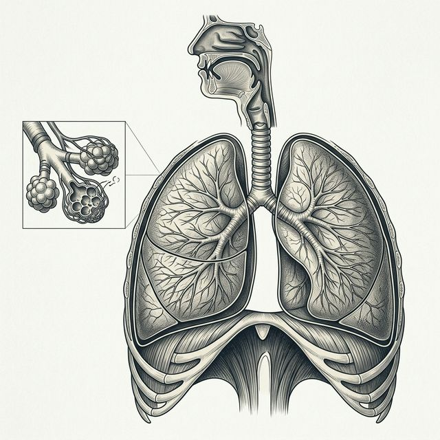

Overview
What Is Mesothelioma?
Plain-language disease overview, forms of mesothelioma, and asbestos linkage.
Detailed editorial analysis of mesothelioma pathways, occupational and household exposure risks, regulatory history, and peer-reviewed public health context. Built for clarity, depth, and independent informational authority.

Our foundational article library provides a comprehensive overview of mesothelioma, from clinical diagnosis to the history of industrial asbestos exposure.
Plain-language disease overview, forms of mesothelioma, and asbestos linkage.
How fibers become airborne, where exposures occur, and why disturbance matters.
Which jobs and sectors appear most often in public-health data.
The long interval between exposure and diagnosis, and why it matters.
Shipyards, construction, refineries, and other high-use settings.
How fibers can reach homes through clothing, shoes, and work materials.
How age, condition, and renovation work change the risk picture.
Why asbestos still matters in older public buildings and schools.
From peak use to workplace standards and modern legacy-risk oversight.
A cautious overview of symptoms and why diagnosis requires clinical evaluation.
Historically, mesothelioma risk is most closely linked to industrial work environments where asbestos-containing materials were handled daily.
Vessel construction during the 20th century utilized asbestos extensively for engine room insulation, boiler gaskets, and pipe lagging, creating high-risk environments for shipyard workers.
Asbestos was common in joint compounds, insulation, and floor tiles. Tradespeople such as insulators, drywallers, and pipefitters often encountered these materials during installation and repair.
Power plants and refineries relied on asbestos for thermal protection. Maintenance workers in these facilities often handled heat-resistant materials that contained chrysotile or amosite fibers.
Mesothelioma is characterized by a long latency period, typically ranging from 20 to 50 years between initial exposure and clinical diagnosis. This delay is a primary reason why new cases continue to be identified decades after occupational safety standards were significantly tightened. Understanding this timeline is essential for clinical evaluation and public health tracking.
Mesothelioma Risks is maintained as a neutral editorial resource. Our content is built on a foundation of verified public health data and peer-reviewed research.
We derive our data from the CDC, National Cancer Institute (NCI), and the Environmental Protection Agency (EPA) to ensure the highest degree of informational accuracy.
This site does not function as a legal funnel. We do not host lawyer links, compensation forms, or lead-generation logic. Our goal is pure editorial clarity.
By focusing on educational depth and historical context, we provide a credible resource for researchers and individuals seeking neutral information on asbestos risks.